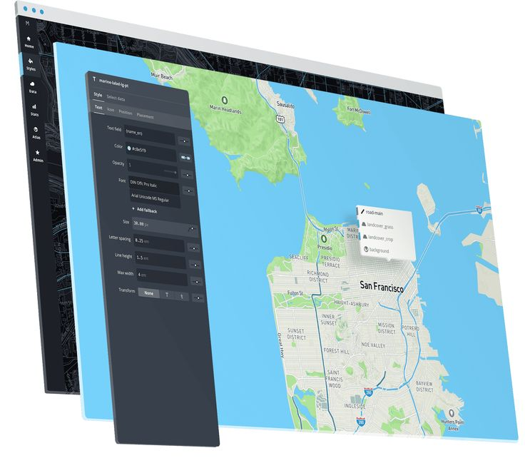

Making A Map with Mapbox Studio
#maptime Boulder March 12, 2015
Mapbox
A provider of online maps and contributor to many popular online mapping libraries and applications.
Mapbox offers commercial mapping services. Many of them use OpenStreetMap data and involve large open-source efforts. Mapbox is a main contributor to the Mapnik renderer project, they helped create the web editor iD and they created Tilemill, the software used to design the OpenStreetMap map style. (from http://wiki.openstreetmap.org/wiki/Mapbox)
Mapbox was created as a part of Development Seed in order to offer map customization for non-profit customers, in 2010. It was bootstrapped until a 2013 $10M funding round by Foundry Group. Early work on OpenStreetMap tools, including the iD editor, was funded by a $575,000 grant from the Knight Foundation. (from http://en.wikipedia.org/wiki/Mapbox)
Mapbox Editor
- An online mapping interface for basic map customization and data creation
TileMill
- An open source tool used to design maps for the web
- Uses Mapnik for rendering and CartoCSS for styling
Mapbox Studio
- An open source tool used to design maps for the web using vector tiles
- Uses Mapnik for rendering and CartoCSS for styling
- More on Studio later...
Mapbox.js
- A JavaScript library built on top of Leaflet
- Used to wrap Mapbox based maps and other functionality into web applications
iOS and Android SDK
- Tools used to build native mobile applications for iOS or Android
Mapbox API
- Used to power functions in maps like geocoding, routing, and offline caching
Mapbox Studio
(from https://www.mapbox.com/mapbox-studio/#darwin)
Vector Tiles
Mapbox Studio gives you instant streaming access to massive global datasets like:
- Mapbox Streets
- Mapbox Terrain
- Mapbox Satellite
Typography
Mapbox Studio comes bundled with over 300 pro fonts selected for use with digital cartography.
Imagery & effects
Built directly into the Mapbox Studio style editor:
- aerial imagery
- textures
- compositing effects
Resolution independence
Every Mapbox Studio project adapts automatically to HiDPI and Retina displays making it possible to design maps for multiple screens and devices at once.
Mapbox Studio Install
Install Overview
- Go to the Mapbox Studio download page.
- Click the download button
- Follow the instructions for your specific system.
- Start it up.
- Create a Mapbox account (required).
Downloading
Click the big green button on this page.

Installing
- Unzip the downloaded file
- Double Click the App

Create an Account 1/4
Click the connect button

Create an Account 2/4
Click the Need an account? button

Create an Account 3/4
Fill in your information

Create an Account 4/4
Allow Mapbox Studio access to your account

Using Mapbox Studio
The Mapbox GUI
- Create a project
- Left Sidebar
- Top Bar
- Map Preview
- Right Sidebar
Creating a project
Select a style from the styles window

Left Sidebar

Left Sidebar
Save As
Allows you to save your mbstudio style and associated datasets.
Allows you to save your mbstudio style and associated datasets.
Left Sidebar
Settings
Allows you to export your vector tiles to a file or directly to Mapbox's servers
Allows you to change attributes for your projects such as:
- name
- description
- attribution
- center
- format
- zoom levels
Left Sidebar
Layers
Allows you see what layers are available to use in your map.
Left Sidebar
Fonts
Displays what fonts are available for your to use.
Left Sidebar
Docs
Answers to all kinds of questions about Mapbox Studio.
Answers to all kinds of questions about Mapbox Studio.
Left Sidebar
Projects
Open an existing project.
Create a new project.
Top Bar

Left Sidebar
Search
Search for a city to pan the map.
Left Sidebar
Expand Map
Toggles the display of the right sidebar.
Left Sidebar
Zoom + / -
Zooms your map in or out.
Left Sidebar
View Wireframe
Allows you to see the raw data behind the map.
Left Sidebar
Places
Allows you to view your style in many different places around the world.
Map Preview
A straightforward preview of what your final map will look like

Right Sidebar
Contains the CartoCSS used to style the map

Creating A Map with Mapbox Studio
Heavily adapted from here: https://www.mapbox.com/mapbox-studio/source-quickstart/
Quickstart Overview
- Download your dataset
- Create a new project
- Add your dataset
- Adjust its settings
- Verify the dataset's properties
- Add field desciptions
- Save and Upload
Download your data
You can use the Boulder Restaurant Data here: http://www.loc8.us/maptime2015/mbstudio/boulder_restaurants.geojson
Or download your own GeoJSON dataset with Overpass Turbo: http://overpass-turbo.eu/
Create a new project:
Click Projects

Click New Project

Click Blank Source on the right side of the screen
Add your dataset
Click New Layer on the top right

Select the layer downloaded in step 1

Adjust its settings
Add a description
Set the buffer size to 32
Click Done in the upper right

Verify the dataset's properties
Save your project

If you can't find your data, search for Boulder (or whatever city your points are located) using the Top Bar
Verify the dataset's properties
Zoom in and click on a point
Verify the properties listed

Add field descriptions
Click on your layer in the Layers section in the Right Bar

Click the Fields button in the top right
Write a description for each of your fields
Click Done
Add field descriptions

Save and Upload
Save again, the same way as before
Click Settings in the Left Bar
Click Upload to Mapbox

When it is done, click Back and then Settings, and copy your Map ID for use later
Styling your Map with Mapbox Studio
Heavily adapted from here: https://www.mapbox.com/mapbox-studio/source-quickstart/
Styling Overview
- Create a new project
- Select a basemap
- Add your vector data source
- Add a stylesheet for your dataset
- Add a simple style
- Add labels
- Save and Upload
Create a new project
Click Projects on the bottom left
Click New Project
Select a basemap
Select Satellite Afternoon
Add your vector data source
Click Layers on the Left Bar
Click Change Source
In the list at the bottom add your layer's Map ID (comma separated)
Press Apply
Add a stylesheet for your dataset
On the Right Bar, Click the Plus sign
Name your new tab
Click New tab
Add a simple style
#boulder_restaurants { marker-comp-op:screen; marker-allow-overlap:true; marker-line-width:0; marker-fill:#a20; }
Add labels
#boulder_restaurants::label[zoom>=17] { text-allow-overlap:true; text-size:14; text-name:'[name]'; text-face-name:'Open Sans Regular'; text-fill:#fff; }
Save and Upload
Save your map the way you've done it before
Go to setting and click Upload to Mapbox
Go to the website linked from the Map ID
Click on the button with an arrow pointing out of it to the top right

You can now view your map anywhere online!
CartoCSS Styling with Mapbox Studio
I think we've had enough for tonight, but if you'd like to learn more about styling in CartoCSS, you can view Mapbox's Style Quickstart Guide
Thanks!